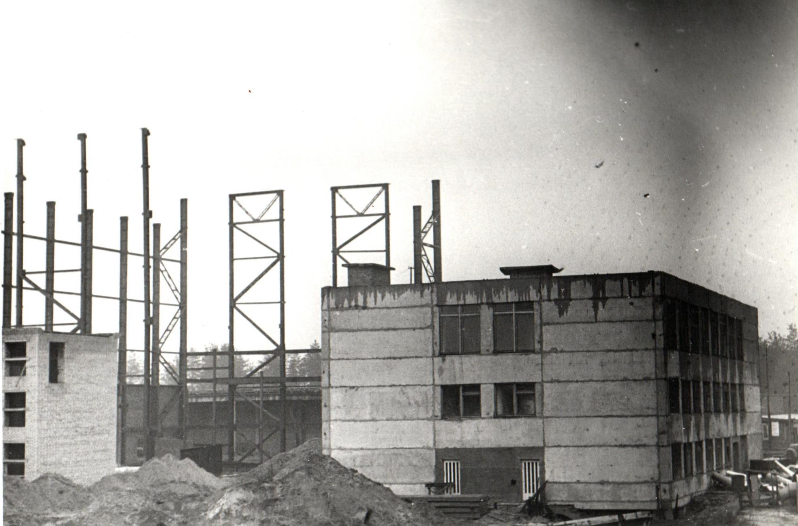

Как появилось молоко?
История молока
Испокон веков крестьянин старался обеспечить свою семью сначала хлебом и молоком, а уж потом «чем бог пошлет». Отсюда и извечная мечта русского народа о «молочных реках и кисельных берегах» – символе сытости и благополучия. Человек открыл для себя молоко примерно еще в 10-е тысячелетие до нашей эры, о чем свидетельствуют раскопки археологов, предания, легенды, сказки и мифы. В ходе раскопок были найдены специальные подойники и отстойники для приготовления творога. Также об использовании молока свидетельствуют рисунки, на которых мужчины доят коров, на стенах Египетских пирамид.
Сыр в мифологии
В индийской мифологии есть легенда о «пахтанье Молочного океана». Боги взбивали огромную поверхность, желая получить напиток бессмертия. В качестве ступы была гора Мандара. Из потревоженного молочного океана появились чудесные вещи – солнце, луна и священная корова изобилия, драгоценный камень и белый мифический конь. Затем океан сгустился в масло, и наконец, выделил из себя напиток бессмертия и вечной молодости – амрита.
Один из африканских мифов гласит, что из капли молока зародилась Вселенная. На Земле, обещанной Богом еврейскому народу, реки текут медом и молоком. По греческому преданию, Геракл питался только молоком и сыром. Такое трепетное отношение к молоку вполне объяснимо: для кочевого племени молоко, масло, сыр – основы существования, возможность быть сытыми, не вредя животным и не убивая их. Падение удоев ставило племена на грань вымирания.
Факты о молоке в Древнем мире
- Гиппократ назвал молоко лекарством и говорил: «В молоке – совершенство».
- Царица Египта Клеопатра ежедневно принимала молочные ванны, чтобы сохранить красоту и молодость.
- Академик Павлов называл молоко пищей, приготовленной самой природой.
- Аристотель считал, что в молоке есть женская кровь, "сварившаяся" под влиянием телесного жара, а потребитель женской крови в том или ином виде сам становится женщиной.
Появление молочных заводов в России
Первые прообразы современных молокозаводов в России возникли в XIX веке в губерниях с развитым молочным скотоводством. Сподвижник известного русского полководца А. В. Суворова Н. Н. Муравьёв, выйдя в отставку, создал в 1807 г. в имении «Осташево» под Москвой образцовый по тому времени скотный двор и «молочное заведение». Оно и считается первым молочным заводом в России. В 1830 г. Н. Н. Муравьёв опубликовал «Наставление по управлению скотными дворами», где излагал порядок доения коров, охлаждения и хранения молока, а также доказывал целесообразность развития молочного дела в России.
В 1836 г. декабристы А. П. Беляев и братья А. А. и Н. А. Крюковы основали молочный завод в Минусинске (Сибирь), где молоко, получаемое от 200 коров, принадлежавших колонии, перерабатывали на сливки, простоквашу, варенец и масло.
Н. В. Верещагин – создатель русского молочного дела
Создателем русского молочного дела часто называют видного общественного деятеля России второй половины XIX века Н. В. Верещагина. Н. В. Верещагин организовал в селе Едимоново Тверской губернии первую в России школу молочного хозяйства.
За годы своего существования школа подготовила 1200 мастеров маслоделия и сыроделия. Н. В. Верещагину также принадлежит первая попытка организованного снабжения молоком населения крупных городов. В 60-х годах XIX века он открыл в Петербурге на артельных началах первую молочную. В эту молочную члены артели доставляли молоко, а затем без особой обработки развозили его по магазинам и отдельным потребителям. Так как молоко было сырое, неохлаждённое, то оно часто скисало, не доходя до потребителя. По этим причинам артельный завод был закрыт. В эти годы городское население Москвы, Петербурга и других крупных городов снабжалось молоком, полученным от коров, содержавшихся в городах. В то время было широко распространено содержание дойных коров при пожарных командах. Между ними существовало как бы соревнование за выращивание лучших высокопродуктивных животных. В 1884 г. в Москве имелось более 6000 коров.
«История народных сказок, легенд и праздников»
Иван Быкович – Иван Коровий Сын
Сказка о богатыре, рожденном от коровы. Иван Быкович — символ силы и храбрости, побеждающий чудовищ и восстанавливающий справедливость.
«Крошечка-Хаврошечка»
Русская народная сказка о сироте, которой помогает волшебная корова. Эта история о доброте, терпении и вознаграждении за труд.
«Молочные реки – кисельные берега»
Образ счастливой жизни в сказках, где изобилие и достаток выражаются в реке из молока и берегах из киселя.
«Легенды о коровах и славянские праздники»
У славян корова была символом достатка и плодородия. В праздники, такие как Семик и Купала, коров украшали, а молоко считалось даром богов.
Раздел 1. История развития молочного производства
Официальная история открытого акционерного общества «Милкавита» начинается 31 декабря 1982 года. Именно в этот день была завершена стройка, а точнее, государственная комиссия подписала акт о сдаче в эксплуатацию Гомельского молочного комбината. Но на самом деле она начинается гораздо раньше.
Первое крупное предприятие по переработке молока в Гомеле было создано в 1927 году на базе артели «Молочная лавка», которую в последующем назвали «Центральная молочная». Для ее оснащения у немецкой фирмы «Астро-Верс» был закуплен комплект оборудования. В 1929 году реконструкцию завершили. Мощность первого молочного завода составила порядка 12 тонн молока в сутки.

В годы Великой Отечественной войны здание завода было полностью уничтожено, его восстановление завершилось только в 1949 году.
В 1951 году осуществлена первая реконструкция ГМЗ, а в 1959-1963 гг. – вторая со строительством на этой же площадке двухэтажного корпуса.
В 1977 году было принято решение о начале строительства в г. Гомеле молочного завода на новой площадке, а старый гормолзавод предстояло реконструировать под фабрику мороженого, т.к. в городе не было специализированного предприятия по производству данного продукта. В структуру вступившего в строй нового молочного комбината входили: цех производства цельномолочной продукции производственной мощностью 230 тонн молока в смену, маслоцех (11 тонн в смену), цех сушки молока (10 тонн в смену) и шесть вспомогательных цехов: готовой продукции, тарный, ремонтно-строительный, электроцех, котельная, компрессорная. Общий объем перерабатываемого сырья составлял 450 тонн в смену.


В 1990 году объем перерабатываемого сырья составлял 281,2 тыс. тонн в смену. В октябре этого же года в самостоятельную единицу выделился цех мороженого. Сейчас – это СООО «Ингман мороженое».
В 1991 году на территории молочного комбината начал работу новый цех детского питания, где вырабатывалась молочная продукция для детей с трехмесячного возраста.
В 1992 году введен в эксплуатацию цех стерилизованных продуктов, оснащенный современным импортным оборудованием.
В 1994 году Гомельский молочный комбинат был преобразован в открытое акционерное общество «Молочные продукты.
В результате реформирования в 2005 г. в состав общества были включены: два филиала - Добрушский и Лоевский молокозаводы и три частных унитарных предприятия – ЧУП «Речица молоко» (г. Речица), ЧУП «Полесские сыры» (г. Хойники) и Торговый дом «Молочное кружево» (г. Гомель).
В 2006-2008 гг. на заводе проведено масштабное техническое перевооружение производства за счет ввода в эксплуатацию нового соответствующего передовым мировым технологиям оборудования.
Для оптимизации производства Добрушский филиал ОАО «Молочные продукты» был перепрофилирован: в настоящее время занимается пошивом спецодежды, изготовлением гофротары, окон и дверей из пластика. А в 2011 году ЧУП «Речица молоко» и ЧУП «Полесские сыры» преобразованы в производственные участки головного предприятия.
9 января 2014 года ОАО «Молочные продукты» было переименовано в ОАО «Милкавита» и с этого дня компания открывает новую страницу в своей истории.
Об истории молочного производства за 8 минут
Статьи из газеты


Компания сегодня
ОАО "Милкавита" сегодня — это современное предприятие, оснащённое высокотехнологичным оборудованием ведущих отечественных и зарубежных компаний. Так в области технологий и оборудования партнерами выступают широко известные и заслуживающие доверия фирмы из Италии, Германии, Швеции, Австрии, Словакии, Польши и др. Производственная мощность молокозавода позволяют перерабатывать около 1000 тонн молока в сутки и осуществлять производство широкого ассортимента натуральных, конкурентоспособных и абсолютно безопасных молочных продуктов высокого качества:
- Молоко – 345 тонн
- Кефир – 75 тонн
- Творог – 15 тонн
- Сметана – 30 тонн
- Йогурт – 10 тонн
- Масло сливочное – 20 тонн
- Сыры – 11 тонн

Постоянный контроль качества продукции – важнейший аспект деятельности ОАО «Милкавита». Всё поступающее сырье, технологические процессы и готовая продукция проходят строжайший многоступенчатый лабораторный контроль на всех стадиях производства. Кроме того, на предприятии используется закрытый тип производственного процесса, при котором непосредственный контакт персонала c продукцией реально сведён к минимуму.
Для подтверждения качества и безопасности готовой продукции ОАО «Милкавита» проводит работу не только по обязательной, но и по добровольной государственной гигиенической регистрации и сертификации.
На предприятии действуют следующие системы:
- система менеджмента качества соответствует требованиям СТБ ISO 9001;
- система менеджмента безопасности пищевых продуктов соответствует требованиям СТБ ИСО 22000;
- система менеджмента безопасности пищевых продуктов соответствует требованиям FSSC 22000;
- система менеджмента безопасности пищевых продуктов на основе анализа опасностей и критических контрольных точек соответствует требованиям СТБ 1470;
Более половины производимой продукции экспортируется. Среди стран экспортеров - Россия, Казахстан, Китай, Армения, Украина, Грузия, Узбекистан, Таджикистан, Сирия, Кыргыстан, ОАЭ, Бангладеш, Турция, Египет, Вьетнам и др. Основные статьи экспорта: цельномолочная продукция, сухие молочные продукты, масло, сыры.

Предприятие владеет собственной сетью фирменной торговли на территории Республики Беларусь, которая представлена 40 объектами.
Особое внимание на предприятии уделяется культуре производства, вопросам экологии и санитарии, благоустройству цехов, участков, территорий, условиям труда и быта работающих. Осуществляется помощь пенсионерам и местным учреждениям социальной сферы. Предприятие предоставляет сотрудникам социальный пакет. Осуществляется поддержка усилий власти в развитии территории.
ОАО «Милкавита» всегда стремится максимально учитывать желания своих потребителей и развивать свой ассортимент в соответствии с основными мировыми трендами и стандартами.
ОАО «Милкавита» прочно завоевало репутацию производителя высококачественной, натуральной продукции с непревзойденным вкусом. Подтверждением тому служат многочисленные награды международных и национальных конкурсов.
ОАО «Милкавита» - ведущая компания, завоевавшая репутацию надежного и профессионального делового партнера, которому можно доверять.
В истории предприятия были взлеты и падения. Менялось название, вводились в строй, реконструировались цеха и участки, но одно оставалось неизменным - высокое качество выпускаемой продукции при постоянно увеличивающемся ассортименте.
Каждый день сотрудники компании вписывают новые страницы в новейшую историю компании, постоянно дополняя ее новыми планами и достижениями.
Сотрудники ОАО "Милкавита"


Раздел 2. Продукция по республике Беларусь
ТМ «Milkavita»
Под ТМ «Milkavita» выпускается цельномолочная продукция (молоко с длительными сроками реализации, сливки, творог, сметана), сухие молочные продукты, сыры, масло сливочное фасованное и весовое.
TM "Gustare"
Под ТМ «Gustare» выпускаются плавленые сыры,пасты сливочные,творожные сыры.
`TM "Latte Barista"
Под ТМ Latte Barista выпускается молоко и сливки для использования как профессионалами, так и любителями в приготовлении кофейных напитков в домашних условиях и в сегменте HoReCa.
TM "Моя Славита"
Под ТМ «Моя Славита» выпускается цельномолочная продукция: молоко с короткими сроками реализации, плавленые сыры, масло сливочное фасованное, йогурты, творожные десерты, пудинги, сырки творожные глазированные.
Раздел 3. Продукция в дальнее и ближнее зарубежье
ОАО «Милкавита» – это современное предприятие, специализирующееся на производстве высококачественной молочной продукции. Компания использует передовые технологии и строгий контроль качества на всех этапах производства, что позволяет предлагать потребителям натуральные и полезные продукты.
Более половины производимой продукции экспортируется. Среди стран экспортеров - Россия, Казахстан, Китай, Армения, Украина, Грузия, Узбекистан, Таджикистан, Сирия, Кыргызстан, ОАЭ, Бангладеш, Турция, Египет, Вьетнам и др. Основные статьи экспорта: цельномолочная продукция, сухие молочные продукты, масло, сыры.
ОАО «Милкивата» выпускает продукцию на эскпорт под известными брендами
Для рынка России:
«Свитлогорье» — бренд, который представляет продукцию компании в России. Продукты под этим брендом включают в себя молоко, сливки, кефир, сметана, творог и другие изделия из молока. Бренд «Свитлогорье» позиционируется как производитель натуральных и качественных молочных товаров.
«Свитлогорье»
«Свитлогорье» высоко ценится за натуральность и отличные вкусовые качества.
В 2023 г. компания запустила собственный бренд «Софийское подворье» с широким ассортиментом цельно- и кисломолочной продукции, которая производится на ведущем молочном предприятии Республики Беларусь ОАО «Милкавита».

«Софийское подворье»
Бренд ассоциируется с качественными продуктами, произведёнными с учётом традиций и современных технологий.
Для рынка Китая:
«Здрава» — бренд, под которым Милкавита продаёт молочные продукты в Китае. В рамках этого бренда предлагаются как молоко, так и сухая молочная продукция, включая порошковое молоко и молочные смеси.
«Здрава»
«Здрава» ассоциируется с высококачественными и безопасными молочными продуктами.
Раздел 4. Знаки качества
Сертификаты


Раздел 5. Молочные базы
Молочные базы являются неотъемлемой частью агропромышленного комплекса, обеспечивая бесперебойные поставки молока и молочной продукции. Их деятельность поддерживает экономику региона и способствует развитию сельского хозяйства. В этом перечне собраны ведущие молочные базы, работающие на благо потребителей. Cписок молочных баз, которые вносят значительный вклад в молочную промышленность:
- 21 съезд КПСС
- Борщовский
- Брагинагросервис
- Брагинка
- Брилево
- Бывальки
- Гомельская птицефабрика
- Демеховское
- Дзержинский - Агро
- Жгунское
- Знамя родины
- Исток
- Калининский
- Красная Буда
- Круговец
- Крупец
- Кузьминичи
- Малиновка-Агро
- Мележа
- Оборона
- Оревичи
- Рассвет
- Речицкий-Агро
- Славмол
- Сож
- Стреличево
- Судково
- Тереховка-агро
- Уваровичиэлит
- Урицкое
- Утевское
- Фрунзе - Агро
- Хальч
- Южный